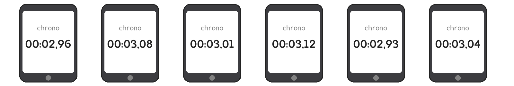
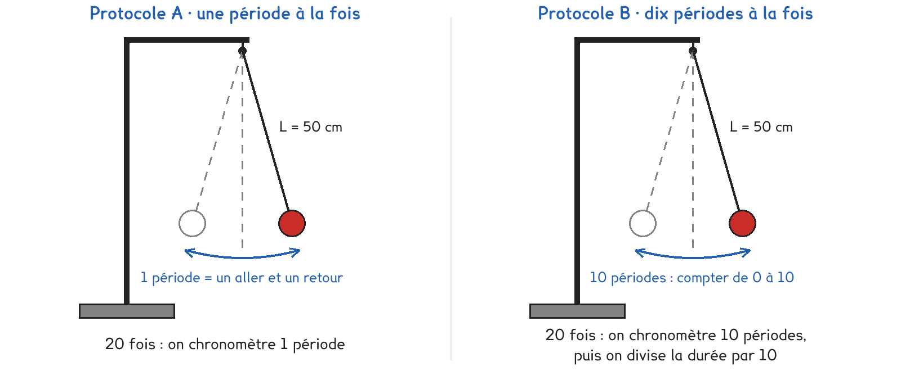
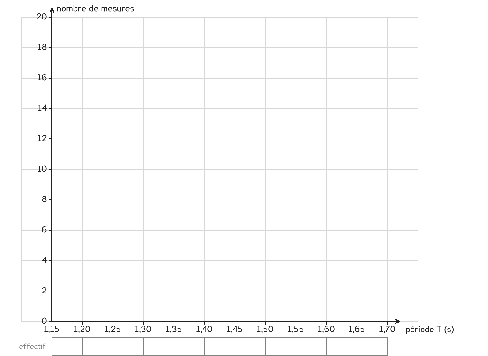

1re Bac Pro · toutes spécialités · TP commun CT-01
Quand vingt mesures de la même durée donnent vingt valeurs, laquelle annoncer, et comment les resserrer ?
3 figures
Sujet. Au parc, six amis chronomètrent avec leur téléphone le même aller-retour d’une balançoire. Ils trouvent six valeurs différentes, et chacun pense que la sienne est la bonne.

Problématique : quand vingt mesures de la même durée donnent vingt valeurs, laquelle annoncer, et comment les resserrer ?
Au laboratoire, la balançoire est remplacée par un pendule : une masse au bout d’un fil de 50 cm. Un aller et un retour s’appellent une période, notée T.
a) Relever sur la figure la plus petite et la plus grande des six durées.
plus petite : ………… s · plus grande : ………… s · écart entre les deux : ………… s
Le téléphone affiche les minutes, les secondes et les centièmes de seconde.
b) Quelle est la plus petite durée que ce chronomètre distingue ? Entourer.
1 s · 0,1 s · 0,01 s · 0,001 s
Deux protocoles répondent à la même question. Ici, la comparaison est le TP : le professeur répartit la classe, une moitié prend A, l’autre B, et on compare à la fin.

Protocole A · une période à la fois. On chronomètre une seule période, un aller et un retour, et on recommence vingt fois.
Protocole B · dix périodes à la fois. On chronomètre dix périodes d’affilée, on divise la durée par dix, et on recommence vingt fois.
c) Compléter le tableau pour comparer les deux protocoles.
| Protocole A | Protocole B | |
|---|---|---|
| Ce qu’on chronomètre à chaque mesure | …………………………… | …………………………… |
| Le calcul pour obtenir une période T | …………………………… | …………………………… |
| La durée des vingt mesures | courte · longue | courte · longue |
Votre protocole, attribué par le professeur, à entourer : A · B
On déclenche et on arrête le chronomètre avec le doigt, qui part toujours un peu en retard ou en avance : on se trompe d’environ 0,1 s à chaque mesure.
d) Cette erreur de 0,1 s pèse-t-elle plus sur une période ou sur dix ? Pourquoi ?
e) Hypothèse : quel protocole donnera les vingt périodes les plus proches ?
A · B · les deux pareil
Avant de commencer
La potence est lestée ou serrée au bord de la table : elle ne doit pas basculer.
On écarte la masse de 5 cm au plus, et personne ne passe la main dans sa trajectoire.
Chaque mesure se déclenche et s’arrête au même endroit : quand la masse s’arrête à droite.
f) Schématiser le pendule, sa longueur L et le trajet d’une période.
Le schéma se dessine sur la feuille du TP.
g) Relever les vingt mesures. En A, les deux lignes sont identiques.
| Mesure | 1 | 2 | 3 | 4 | 5 | 6 | 7 | 8 | 9 | 10 |
|---|---|---|---|---|---|---|---|---|---|---|
| Durée (s) | ||||||||||
| T (s) |
Suite des mesures :
| Mesure | 11 | 12 | 13 | 14 | 15 | 16 | 17 | 18 | 19 | 20 |
|---|---|---|---|---|---|---|---|---|---|---|
| Durée (s) | ||||||||||
| T (s) |
Mode statistiques de la calculatrice : entrer les vingt périodes dans une liste, puis lire la moyenne et l’écart-type σ.
h) Calculer la moyenne et l’écart-type des vingt périodes.
moyenne : ……………… s · écart-type σ : ……………… s
Toute la classe utilise les mêmes classes de 0,05 s, pour pouvoir poser côte à côte les histogrammes des deux protocoles. Une période qui tombe pile sur une limite va dans la classe qui commence à cette limite. Compléter l’exemple, la première case est faite.
| Période (s) | 1,38 | 1,40 | 1,43 | 1,45 | 1,52 |
|---|---|---|---|---|---|
| Classe (s) | 1,35 à 1,40 | ………… | ………… | ………… | ………… |
Puis ranger ainsi vos vingt périodes.
i) Compter les périodes de chaque classe, puis tracer l’histogramme.

j) Écrire le résultat, moyenne ± écart-type, avec deux chiffres après la virgule.
T = ……………… s ± ……………… s
k) Comparer votre écart-type à celui d’un groupe qui a pris l’autre protocole.
Le plus petit est celui du protocole ……… ; il est environ ……… fois plus petit.
l) L’hypothèse e est-elle confirmée ? L’écart vient-il du chronomètre ou du doigt ?
m) Répondre à la problématique en deux phrases, pour les six amis du parc.
Ce que ce TP a établi, et qui vaut pour toute mesure :
À RETENIR
Toute mesure a une incertitude : elle vient de l’instrument, de la façon de s’en servir et de facteurs qu’on ne contrôle pas.
Sur une série de mesures, la moyenne est la meilleure estimation de la valeur.
L’écart-type mesure la dispersion : il donne l’ordre de grandeur de l’incertitude.
Le résultat s’écrit avec autant de décimales que l’incertitude : L = 50,2 cm ± 0,1 cm.
Un binôme propose de chronométrer cent périodes d’un coup, puis de diviser par cent. Sans calculer, entourer l’écart-type qu’il peut espérer.
environ 0,1 s · environ 0,01 s · environ 0,001 s
Pourquoi ne le fait-on pas en TP ?
TP commun de physique-chimie, toutes spécialités. Le travail se fait sur la feuille du TP : cette page en est la version à l'écran, sans les lignes à remplir. Rien n'est enregistré.